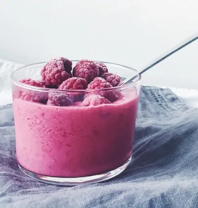

Élixirs naturels · 4 min de lecture
Élixir aux Baies d’Açaï : le rituel antioxydant ultime pour la vitalité, la protection cellulaire et l’éclat global

Introduction
Au cœur de l’Amazonie, certaines populations consomment quotidiennement une baie considérée comme un véritable trésor de longévité : la baie d’açaï.
Utilisée depuis des siècles pour soutenir l’énergie, la récupération et la résistance du corps, elle est aujourd’hui reconnue comme l’un des aliments les plus riches en antioxydants au monde.
Dans un contexte moderne marqué par la pollution, le stress oxydatif, la fatigue chronique et le vieillissement prématuré, l’açaï s’impose comme un allié naturel puissant pour protéger l’organisme et soutenir la vitalité globale.
Dans cet article, je te présente un élixir naturel à base de baies d’açaï, formulé avec une synergie d’ingrédients soigneusement sélectionnés afin de créer une alchimie optimale pour la santé, l’énergie cellulaire et l’équilibre métabolique.
👉 Je tiens à vous rappeler une règle d’or que j’aime beaucoup et qui guide mes choix au quotidien : si la nature ne l’a pas créé, ne le buvez pas.
Le problème
Notre organisme est constamment exposé à :
la pollution environnementale,
le stress chronique,
une alimentation appauvrie,
le manque de micronutriments essentiels.
Ces facteurs favorisent :
le stress oxydatif,
la fatigue persistante,
le vieillissement prématuré des cellules,
une baisse de récupération et de vitalité.
Le corps ne réclame pas plus de calories ou de stimulants.
Il réclame des nutriments protecteurs, vivants et biodisponibles.
La promesse
L’élixir aux baies d’açaï agit comme un bouclier antioxydant naturel.
Il protège les cellules, soutient l’énergie de fond, améliore la récupération et participe à l’éclat global du corps, de l’intérieur vers l’extérieur.
Ce n’est pas une boisson excitante.
C’est un renfort cellulaire profond.
Les bénéfices
Une protection antioxydante puissante
Une énergie plus stable et durable
Une meilleure récupération physique et mentale
Un soutien de la peau, des muscles et du métabolisme
Une vitalité globale renforcée
🌿 Pourquoi ce remède est efficace
Les baies d’açaï sont exceptionnellement riches en :
anthocyanines (antioxydants majeurs),
acides gras essentiels,
fibres,
minéraux et polyphénols.
Elles agissent directement sur la protection des cellules contre le stress oxydatif, l’inflammation de bas grade et la fatigue métabolique.
Associées à des ingrédients comme les fruits rouges, l’eau de coco et les graines de chanvre, elles deviennent :
plus assimilables,
plus complètes nutritionnellement,
plus efficaces sur la vitalité globale.
👉 Cette synergie nourrit à la fois les cellules, les muscles, le cerveau et la peau.
💪 Les bienfaits de l’élixir aux baies d’açaï
Puissant antioxydant naturel
Protège les cellules contre le vieillissement prématuré.Soutien de l’énergie et de l’endurance
Idéal pour les personnes actives ou sportives.Amélioration de la récupération
Particulièrement bénéfique après l’effort ou en période de stress.Soutien de la peau et de l’éclat
Les antioxydants participent à une peau plus lumineuse et protégée.Équilibre métabolique global
Les fibres et bons gras soutiennent la digestion et la stabilité énergétique.
🍇 La recette de l’Élixir Antioxydant & Vitalité à l’Açaï
Ingrédients (alchimie optimale)
1 cuillère à café de poudre de baies d’açaï (bio, non sucrée)
200 ml d’eau de coco naturelle
Une poignée de fruits rouges (myrtilles ou framboises)
1 cuillère à soupe de graines de chanvre décortiquées
½ banane mûre (optionnelle, pour la texture et l’énergie douce)
Un filet de jus de citron vert
Pourquoi cette synergie fonctionne ?
L’açaï protège et revitalise les cellules.
L’eau de coco hydrate et recharge en minéraux.
Les fruits rouges renforcent l’action antioxydante.
Les graines de chanvre apportent protéines et bons gras.
Le citron vert améliore l’assimilation et la fraîcheur métabolique.
Préparation
Place tous les ingrédients dans un blender.
Mixe jusqu’à obtenir une texture lisse et homogène.
Bois immédiatement pour profiter de tous les nutriments vivants.
⏰ Comment l’utiliser
À consommer 1 fois par jour, idéalement :
le matin,
ou après une séance sportive.
Peut être utilisé en cure de 3 à 4 semaines.
Parfait en période de fatigue, de stress ou de récupération.
👥 À qui s’adresse ce rituel
À ceux qui veulent ralentir le vieillissement cellulaire
Aux personnes fatiguées ou surmenées
Aux sportifs et personnes actives
À ceux qui veulent soutenir leur peau et leur récupération
À toute personne cherchant un rituel antioxydant naturel et complet
⚠️ Précautions
Choisis une poudre d’açaï pure, bio et sans sucre ajouté.
Évite les versions industrielles ultra-transformées.
Adapte la quantité de fruits si tu surveilles ta glycémie.
En cas de condition médicale particulière, demande conseil à un professionnel de santé.
🌱 Conclusion & appel à l’action
L’élixir aux baies d’açaï est une déclaration d’intention envers ton corps :
le protéger, le nourrir et le renforcer à la racine.
Il incarne une vérité simple mais puissante :
👉 la longévité commence au niveau cellulaire.
👉 Si la nature ne l’a pas créé, ne le buvez pas.
Je partage régulièrement des élixirs, rituels et guides bien-être pour t’aider à construire une vitalité solide, durable et consciente.
📚 Je suis auteur bien-être sous le pseudo Chest0 JM.S., mes ouvrages sont disponibles sur Amazon.
🔗 Retrouve tout mon univers ici :
👉 https://linktr.ee/Chest00
👉 Si tu veux aller plus loin, découvre aussi notre
Plus de 40 recettes d'élixirs dans les livres Chest0.
Voir les livres